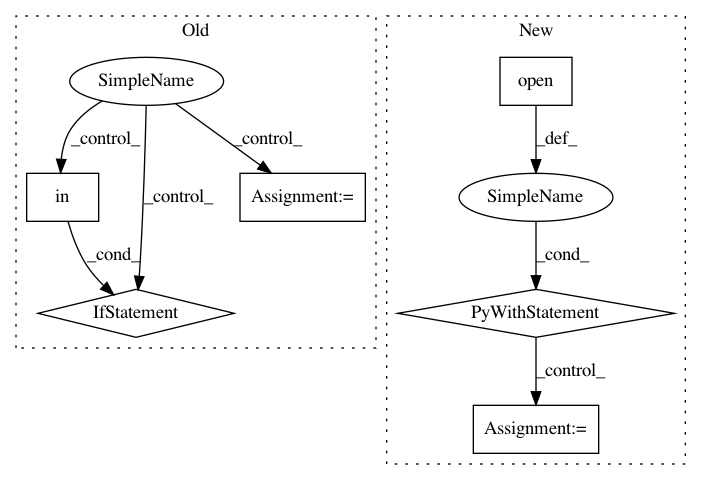

19b609754c23e8fb434236e4bbd5341d1745109c,smac/smbo/smbo.py,SMBO,__init__,#SMBO#Any#Any#Any#,20
Before Change
for i, param in enumerate(self.config_space.get_parameter_names()):
if param in self.config_space.get_categorical_parameters():
n_cats = len(self.config_space.get_categorical_values(param))
self.types[i] = n_cats
X_lower[i] = 0
X_upper[i] = n_cats
elif param in self.config_space.get_continuous_parameters():
lo, up = self.config_space.parameters[param].values
X_lower[i] = lo
X_upper[i] = up
After Change
Seed that is passed to random forest
"""
with open(pcs_file) as fh:
self.config_space = pcs.read(fh.read())
self.config_space.seed(seed)
self.instance_features = instance_features
// Extract types vector for rf from config space
self.types = np.zeros(len(self.config_space.get_hyperparameter()))
In pattern: SUPERPATTERN
Frequency: 3
Non-data size: 6
Instances
Project Name: automl/SMAC3
Commit Name: 19b609754c23e8fb434236e4bbd5341d1745109c
Time: 2015-12-03
Author: feurerm@informatik.uni-freiburg.de
File Name: smac/smbo/smbo.py
Class Name: SMBO
Method Name: __init__
Project Name: QUANTAXIS/QUANTAXIS
Commit Name: 3c8509c5711bf3e3edef1cd0bfd3a767ab426ab0
Time: 2018-04-22
Author: yutiansut@qq.com
File Name: QUANTAXIS/QACmd/__init__.py
Class Name: CLI
Method Name: do_examples
Project Name: EducationalTestingService/skll
Commit Name: ca10c185d94470054d693f19e7691523dbe3ec55
Time: 2019-03-05
Author: jbiggs@ets.org
File Name: skll/data/readers.py
Class Name: NDJReader
Method Name: _sub_read